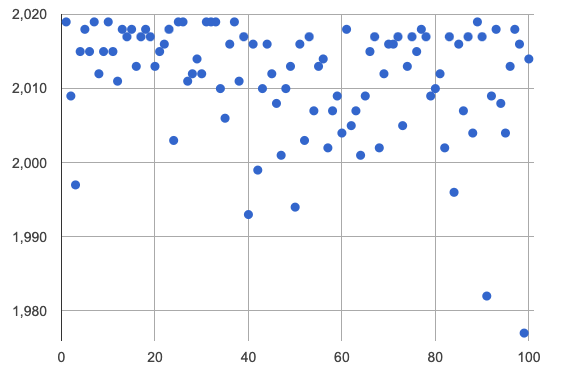
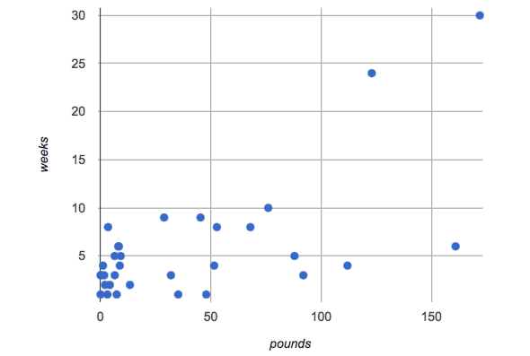
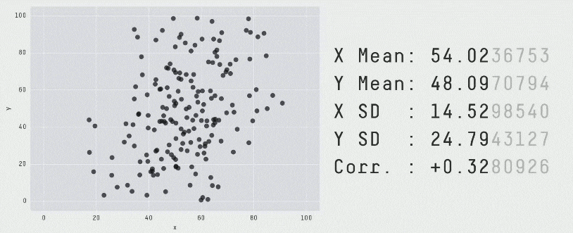

Scatter Plots
Students investigate scatter plots as a method of visualizing the relationship between two quantitative variables. In the programming environment, points on the scatter plot can be labelled with a third variable!
|
Lesson Goals |
Students will be able to…
|
|
Student-facing Lesson Goals |
|
|
Materials |
|
|
Preparation |
|
|
Key Points For The Facilitator |
|
explanatory variable-
any variable that could impact the "response variable", generally plotted on the x-axis of a scatter plot
null hypothesis-
the hypothesis that there is no significant difference between specified populations, any observed difference being due to sampling or experimental error.
quantitative data-
number values for which arithmetic makes sense
response variable-
the variable in a relationship that is presumed to be affected by the explanatory variable, generally plotted on the y-axis of a scatter plot
scatter plot-
a display of the relationship between two quantitative variables, graphing each explanatory value on the x axis and the accompanying response on the y axis
| Making Scatter Plots | 20 minutes |
Overview
Students create scatter plots, which are visualizations that show the relationship between two quantitative variables. They learn how to construct scatter plots by hand, and in Pyret.
Launch
-
Do you think that younger animals get adopted faster? Why or why not?
-
The goal here is to have an open discussion and draw students in. Allow students to share their opinions freely. (For example: Yes, baby animals get adopted quickly because they’re so cute! No, animals require too much work when they are young.)
-
-
What kind of data is
age? What kind of data isweeks?-
Both
ageandweeksare quantitative.
-
-
What kind of display would help us analyze the relationship between age and adoption time?
-
Again, solicit students ideas and discuss why each display type would or would not work.
-
Pie and Bar charts help us see the frequency of values in a categorical column. There are other displays, like histograms and box plots, that help us explore the distribution of values in a quantitative column.
But what we really want is a display that will help us search for a relationship between two quantitative columns, and that’s exactly what scatter plots do.
Scatter plots reveal the relationship between two columns by plotting one on the x-axis and the other on the y-axis.
Before we can draw a scatter plot, we have to make an important decision: which variable is explanatory and which is the response? In this case, are we suspecting that an animal’s weight can explain how long it takes to be adopted, or that how long it takes to be adopted can explain how much an animal weighs? The first one makes sense, and reflects our suspicion that age plays a role in adoption time.
It’s customary to use the horizontal axis for our explanatory variable and the vertical axis for the response variable. Each row in the dataset will be a point on the scatter plot with age for x and weeks for y.
Investigate
We will produce our scatter plot by graphing each animal’s age and weeks values as a point on the x and y axes.
Complete Creating a Scatter Plot to get a feel for making scatter plots by hand.
Teaching Tip As an alternative to plotting the small table, assign a handful of rows from the full table to each student and have them plot those animals on the board. This can be done collaboratively, resulting in a whole-class scatter plot! |
When you created the scatter plot by hand, you started with a Table. Then you plotted a series of dots, using one column for your x’s, one column for your y’s, and the name column to provide a label for each dot.
The scatter-plot function works exactly the same way: it starts with a table, and then needs to know which columns to use for labels, xs, and ys. Here’s the contract:
scatter-plot :: (t::Table, ls::String, xs::String, ys::String)
-
Open your saved Animals Starter File, or make a new copy.
-
Make a scatter plot that displays the relationship between
ageand adoption time (weeks).-
To do this, students will need to type in:
scatter-plot(animals-table,"name", "age", "weeks")
-
-
Are there any patterns or trends that you see here?
-
It appears that younger animals get adopted more quickly.
-
Synthesize
Have students report back on their findings from the starter file and on Creating a Scatter Plot.
Scatter plots show us a collection of points, arranged along two axes. If there’s a relationship between these axes, we’ll see clumps and clouds of points in the graph.

{kind=link}
-
Suppose we picked four animals at random out of our table, plotted them on a scatter plot, and they all fell in a line. Is this enough to reject the null hypothesis?
-
No! Four flips of a fair coin might still come up tails, and four points chosen from a scatter plot with no pattern might still fall on a line! As our sample size increases, however, the chance of us seeing a pattern by random chance gets smaller and smaller.
-
-
What pattern do you see in your scatter plot?
-
Are there any points that seem unusual? Why?
| The Data Cycle | 15 minutes |
Overview
Students apply what they’ve learned about scatter plots to the Data Cycle, using it to answer questions about relationships in the animals dataset.
Launch
Is age the only factor that determines how long it takes for an animal to get adopted?
Have students discuss.
Many apartment buildings do not allow large breeds of dogs, and have a limit on how heavy a tenant’s dog can be. Bigger dogs are not welcome in many apartments. Perhaps the weight of an animal influences the adoption time!
Take a look at the animals dataset, either in your workbook or on the spreadsheet. Do you think there’s a relationship between pounds and weeks in this table? Why or why not?
Let’s use the Data Cycle to explore whether there’s a connection between weight and adoption time.
Investigate
Complete the first Data Cycle on Data Cycle: Relationships in the Animals Dataset.
Discuss as a class:
-
What did you find when you looked at the scatter-plot?
-
Does there appear to be a pattern or trend?
-
What might be problematic about including every species in the same scatter plot of weight?
-
What follow-up questions do you have?
Write your follow-up question in the second Data Cycle on Data Cycle: Relationships in Your Dataset, and complete the Data Cycle for your new question.
Synthesize
We’ve got a lot of tools in our toolkit that help us think about an entire column of a dataset:
-
We have ways to find measures of center and spread for a given quantitative column.
-
We have visualizations that let us see the shape of values in a quantitative column.
-
We have visualizations that let us see frequencies or percentages in a categorical column.
Now we also have a tool that lets us think about two columns at the same time!
What new questions did the Data Cycle lead you to ask? What did you find?
| Looking for Trends | 20 minutes |
Overview
Students are asked to identify patterns in their scatter plots. This activity builds towards the idea of linear associations, but does not go into depth (as as a later lesson on correlations does).
Launch
Shown below is a scatter plot of the relationships between the animals' pounds and the number of weeks it takes to be adopted.

{kind=link}
-
Does the number of weeks to adoption seem to go up or down as the weight increases?
-
Are there any points that “stray from the pack”? Which ones?
Teaching Tip Project the scatter plot at the front of the room, and have students come up to the plot to point out their patterns. |
A straight-line pattern in the cloud of points suggests a linear relationship between two columns. If we can find a line around which the points cluster (as we’ll do in a future lesson), it would be useful for making predictions. For example, our line might predict how many weeks a new dog would wait to be adopted, if it weighs 68 pounds.
Do any data points seem unusually far away from the main cloud of points? Which animals are those? These points are called unusual observations. Unusual observations in a scatter plot are like outliers in a histogram, but more complicated because it’s the combination of x and y values that makes them stand apart from the rest of the cloud.
Unusual observations are always worth thinking about!
-
Sometimes they’re just random. Felix seems to have been adopted quickly, considering how much he weighs. Maybe he just met the right family early, or maybe we find out he lives nearby, got lost and his family came to get him. In that case, we might need to do some deep thinking about whether or not it’s appropriate to remove him from our dataset.
-
Sometimes they can give you a deeper insight into your data. Maybe Felix is a special, popular (and heavy!) breed of cat, and we discover that our dataset is missing an important column for breed!
-
Sometimes unusual observations are the points we are looking for! What if we wanted to know which restaurants are a good value, and which are rip-offs? We could make a scatter plot of restaurant reviews vs. prices, and look for an observation that’s high above the rest of the points. That would be a restaurant whose reviews are unusually good for the price. An observation way below the cloud would be a really bad deal.
Investigate
These numbers and scatter plot both come from the same datasets (you’ll learn more about those numbers in later lessons!). The patterns in the scatter plot vary wildly, but the numbers that summarize the dataset barely change at all!
It’s not just about the numbers!

{kind=link}
Data Scientists and Statisticians use their eyes all the time. Sometimes there’s a pattern hiding in the data, which can’t be seen just by focusing on numbers and measures. Until we really look at the shape of the data, we aren’t seeing the whole picture. (Optional: this animation is from Autodesk, which has an amazing page showing off how similar numbers can be generated from radically different scatterplots. If time allows, have students explore some of the visualizations on the Autodesk website (Autodesk)!)
For practice, consider each of the following relationships. First think about what you expect, then make the scatter plot to see if it supports your hunch.
-
How are the
poundsof an animal related to itsage? -
How are the number of
weeksit takes for an animal to be adopted related to its number oflegs? -
How are the number of
legsan animal has related to itsage? -
Do you see a linear (straight-line) relationship in any of these?
-
Are there any unusual observations?
Synthesize
Debrief, showing the plots on the board. Make sure students see plots for which there is no relationship!
It might be tempting to go straight into making a scatter plot to explore how weeks to adoption may be affected by age. But different animals have very different lifespans! A 5-year-old tarantula is still really young, while a 5-year-old rabbit is fully grown. With differences like this, it doesn’t make sense to put them all on the same scatter plot. By mixing them together, we may be hiding a real relationship, or creating the illusion of a relationship that isn’t really there!
It would be nice if the dots in our scatter plot were different colors or shapes, depending on the species. That would give us a much better picture of what’s really going on in the data. But making a special image for every single row in the table would take a very long time! If only there was a function with a contract like:
species-dot :: (r :: Row) -> Image
This function could take in a row from the animals table, and draw a special dot depending on the species. Unfortunately, no such function exists…yet! Later lessons will teach you to define functions of your own, and extend Pyret to deepen your analysis, create more useful and engaging charts, and dig further into our data.
| Your Own Analysis | flexible |
Overview
Students apply what they’ve learned to their own dataset.
Launch
-
What relationships do you think might be lurking in your dataset?
-
Which pairs of columns would you like to examine?
Investigate
-
Turn to Data Cycle: Relationships in Your Dataset. Use the Data Cycle to generate some scatter plots and add them to the "Making Displays" section of your exploration document.
-
Do these displays bring up any interesting questions? If so, add them to the end of the document.
Synthesize
-
Which relationships did you look for?
-
Do you see any possible relationships or trends?
-
What do those findings mean?
-
What new questions come up for you?
The Animals Dataset contains a number of sub-groups that we might want to compare to one another. For example: maybe we’d like to compare the average adoption time for dogs v. cats!
-
Does your dataset contain any sub-groups? If so, what are they?
These materials were developed partly through support of the National Science Foundation,
(awards 1042210, 1535276, 1648684, and 1738598).  Bootstrap by the Bootstrap Community is licensed under a Creative Commons 4.0 Unported License. This license does not grant permission to run training or professional development. Offering training or professional development with materials substantially derived from Bootstrap must be approved in writing by a Bootstrap Director. Permissions beyond the scope of this license, such as to run training, may be available by contacting contact@BootstrapWorld.org.
Bootstrap by the Bootstrap Community is licensed under a Creative Commons 4.0 Unported License. This license does not grant permission to run training or professional development. Offering training or professional development with materials substantially derived from Bootstrap must be approved in writing by a Bootstrap Director. Permissions beyond the scope of this license, such as to run training, may be available by contacting contact@BootstrapWorld.org.